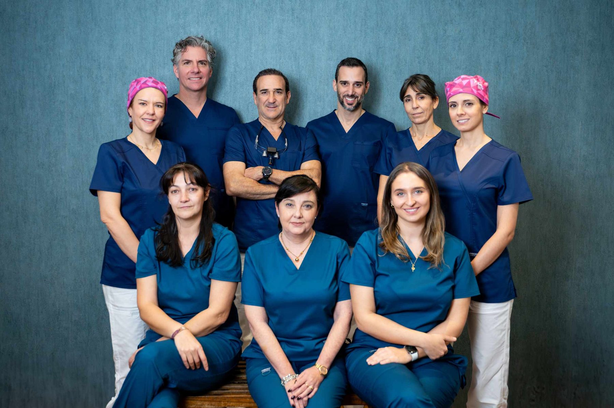
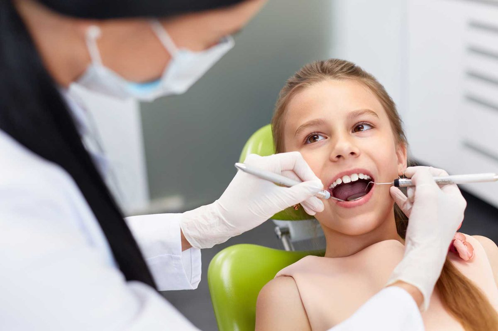
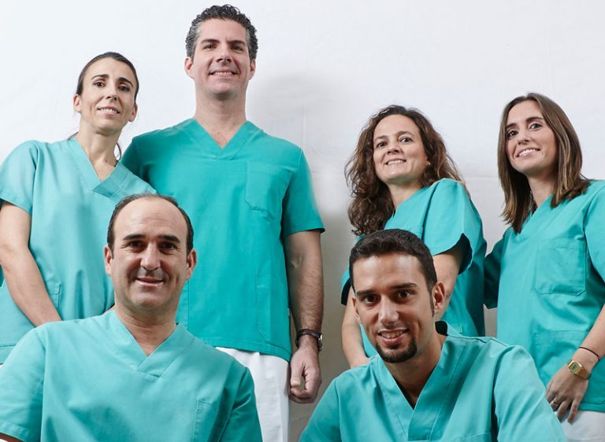
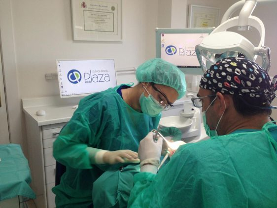
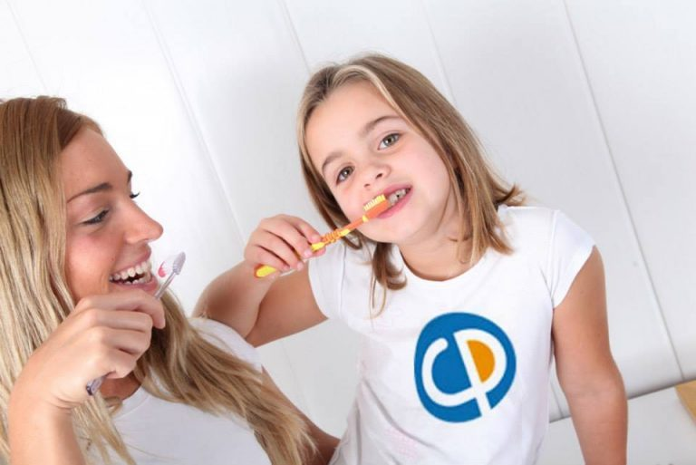

“Quiero un dentista honesto, que no me venda de más.”
En De La Plaza: trabajamos con odontología basada en la evidencia: solo proponemos lo que está demostrado que funciona.
Desde 1965 en la calle Alcalá. Un equipo dirigido por el presidente de la Sociedad Española de Odontología Basada en la Evidencia y formado por docentes universitarios.

Primera visita0 €Docencia y sociedades científicas de nuestro equipo
Seamos sinceros
Normalmente vienen por una de estas tres razones.
“Quiero un dentista honesto, que no me venda de más.”
En De La Plaza: trabajamos con odontología basada en la evidencia: solo proponemos lo que está demostrado que funciona.
“Estoy harto de que cada vez me atienda alguien distinto.”
En De La Plaza: nuestro equipo es estable desde hace años. Siempre te atienden los mismos especialistas y siguen tu evolución.
“Me da pánico el dentista.”
En De La Plaza: ofrecemos sedación consciente para que tu tratamiento sea tranquilo y relajado.
Si necesitas una opinión de confianza
Diagnóstico basado en la evidencia científica, no en vender tratamientos. Sal sabiendo qué necesitas de verdad, qué puede esperar y cuánto cuesta. Sin coste.
Quedan 12 plazas en este mes
Tu tranquilidad, por escrito
Te proponemos solo el tratamiento que la ciencia respalda. Ni más, ni menos.
Un equipo estable y consolidado que conoce tu historia.
Te atendemos del mismo modo que atenderíamos a nuestros familiares o amigos.

Una familia de dentistas
“Somos profesionales honestos. Nos preocupamos de tu salud como si fuera la nuestra.”Dr. Antonio De La Plaza · Presidente de la SEOBE
Clínica Dental De La Plaza abrió sus puertas en 1965 para cuidar a los vecinos de la calle Alcalá. Hoy, con dos generaciones de odontoestomatólogos y un equipo de docentes universitarios, es uno de los centros de referencia de la capital.
Pedir mi Visita de Confianza →Tratamientos
Expertos en cada área de la odontología, en continua formación e investigación.

Tratamos a varias generaciones de las mismas familias. Los peques, en las mejores manos.
Quiero valorar mi caso →Blanqueamiento, carillas y estética con criterio clínico.
Quiero valorar mi caso →Implantes con los protocolos más rigurosos.
Reservar valoración →Para niños y adultos.
Reservar valoración →Tratamiento de encías y cirugía oral.
Reservar valoración →Hazte el tratamiento relajado y tranquilo.
Reservar valoración →Quién te va a atender
El equipo está encabezado por el Dr. Antonio De La Plaza y el Dr. Alberto De La Plaza, junto a especialistas de alto nivel en cada rama.

Dirección médica
Presidente SEOBE
Odontoestomatólogo
Así de fácil
Elige día y hora online o llámanos. Te confirmamos la cita por teléfono.
Un especialista del equipo te explora y te explica tu caso con honestidad, basándose en la evidencia.
Te llevas tu plan por escrito con el precio total y la cuota mensual. Sin presión y sin letra pequeña.


La clínica
Junto a la Plaza de Toros de Las Ventas, con horario amplio de lunes a viernes desde las 8:30.
Financiación
Que el dinero no sea la razón para posponer tu salud. Calcula aquí cuánto pagarías al mes y en tu primera visita te damos la cifra exacta.
Financiación sujeta a aprobación de la entidad financiera. Cálculo orientativo sin intereses.
Opiniones
Lee lo que opinan de nosotros en Google antes de venir.
Preguntas frecuentes
¿Tienes otra duda? Llámanos al 913 566 811 y te la resolvemos en un minuto.
No hay trampa. Preferimos que nos conozcas sin riesgo: si te gusta cómo trabajamos, te quedarás con nosotros muchos años. Incluye exploración con un especialista, radiografía digital y un plan basado en la evidencia con precio cerrado.
Es tomar cada decisión clínica según lo que demuestran los mejores estudios científicos. Significa que no te proponemos nada que no esté demostrado que funciona.
Una técnica que te mantiene relajado y tranquilo durante el tratamiento, sin anestesia general.
No. Te llevas tu plan y tu presupuesto por escrito y decides tú, cuando quieras. Sin llamadas insistentes.
Sí. Ofrecemos financiación, sujeta a aprobación. En la primera visita te calculamos tu cuota exacta.
Atendemos con cita previa. Puedes elegir día y hora directamente en esta web y te llamamos para confirmarla.
Reserva online · 1 minuto
Quedan 12 plazas en este mes
Horario: con cita previa
¿Prefieres llamar? 913 566 811
Horario online
Horario actualizado en tiempo real (hora de Madrid). Y aunque estemos cerrados, puedes reservar tu cita online las 24 horas: te la confirmamos en cuanto abramos.
Festivos nacionales cerrado. Citas con cita previa.
Dónde estamos
Antes de irte
Exploración, radiografía y plan basado en la evidencia por 0 €. Quedan 12 plazas en este mes.
Sí, quiero mi plaza